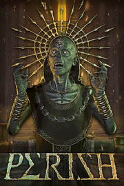

PERISH
Detalles
|  | |
| Tiempo de juego | No Jugado |
| Última actividad | Nunca |
| Añadido | 11/13/2024 0:35:38 |
| Modificado | 11/13/2024 1:06:04 |
| Estado de finalización | No Jugado |
| Librería | Playnite |
| Fuente | PORCHE |
| Plataforma | PC (Windows) |
| Fecha de lanzamiento | 2/2/2023 |
| Puntuación de la Comunidad | 69 |
| Puntuación de la Crítica | 62 |
| Puntuación de usuario | |
| Género | Acción Indie |
| Desarrollador | ITEM42 |
| Editor | HandyGames |
| Característica | Cloud Saves Compat. Total Con Mando Cooperativo Cooperativo En Línea Logros De Multijugador Préstamo Familiar Remote Play En TV Un Jugador |
| Enlaces | Punto de encuentro Discusiones Guías Noticias Página de la tienda PCGamingWiki Logros |
| Tag | Acción Ambientales Cooperativos Cooperativos en línea Demonios Difíciles Disparos FPS Gran banda sonora Hack and slash Indie JcE Multijugador Para adultos Primera persona Roguelite Sangre Sangriento Un jugador Violentos |
Descripción
PERISH es un elegante FPS para cuatro jugadores con una cruz a cuestas. Aniquila hordas de criaturas en las calcinadas arenas del Purgatorio y vende sus cadáveres manchados de oro a los corruptos sacerdotes. Mata a majestuosos jefes y utiliza las recompensas para entrar en el Elíseo, un lugar de revelaciones cósmicas.
Eres amyetri, un espíritu corpóreo condenado a vivir una vida sombría en el reino intermedio del Purgatorio. Ponle fin a tu sufrimiento iniciando los Ritos de Orfeo y derrota a las deidades ctónicas que dominan tu díscolo camino hacia el Elíseo.


Eres amyetri, un espíritu corpóreo condenado a vivir una vida sombría en el reino intermedio del Purgatorio. Ponle fin a tu sufrimiento iniciando los Ritos de Orfeo y derrota a las deidades ctónicas que dominan tu díscolo camino hacia el Elíseo.
EL DESFAVORECIDO INICIADO
Comienza tu viaje con nada más que una espada rota. Solo el danake, la moneda ensangrentada del inframundo, te proporcionará el equipo más adecuado para enfrentarte a los Señores del Mal que se interponen entre tú y Elysium.RIESGO VERSUS RECOMPENSA
Las criaturas vengadoras del Purgatorio están consumidas por el mismo hambre de danake de oro que motiva tu propia misión. Caer en manos de tus enemigos te hará perder la riqueza adquirida. Deposita tu danake en el Panteón antes de morir, o continúa tu carrera hacia el Elíseo y arriésgate a perderlo todo.FUERZA EN LA ASAMBLEA
El inframundo es un lugar solitario. Reúne a un máximo de tres amigos y trazad juntos un camino lleno de oro hacia Elysium. Despliega equipos y artilugios específicos para cooperativas para apoyar, defender y revivir a los demás en el peligroso camino hacia el olvido eterno.UN VIAJE HERCÚLEO
Sobrevive al duro entorno de los escarpados acantilados de Teseo, los templos en ruinas de Orfeo y las fundiciones volcánicas de Hefesto. Navega por laberintos desmoronados, lagos fundidos de oro puro y montañas destrozadas atrapadas en el trago de los remolinos de Caribdis.LA ARMERÍA DE ARES
Las sacerdotisas poseen un formidable arsenal de armas. Utiliza tu danake para equiparte con poderosas coronas y anillos que otorgan al portador importantes ventajas en el campo de batalla. Elige entre una plétora de armas a distancia y cuerpo a cuerpo, y luego imbuye tu armamento elegido con una serie de emocionantes aumentos.CARACTERÍSTICAS.
- Campaña cooperativa online para 1-4 jugadores que se extiende por templos en ruinas, fundiciones volcánicas y antiguos naufragios.
- Una serie de magníficos combates contra deidades colosales raras e inexploradas de la antigua mitología griega.
- Más de 10 jabalinas, espadas, arcos y pistolas artesanales y ornamentadas, cada una con sus propias capacidades ofensivas únicas y mejorables.
- Combates a distancia y cuerpo a cuerpo gratuitos y brutales contra enemigos con comportamientos de batalla distintivos.
- Gladiadores mórbidos: los enemigos de PERISH son implacables, y a medida que viajes por el Purgatorio te encontrarás con un montón de enemigos inspirados en las antiguas mitologías griega, romana y cristiana.
- Soporte post-lanzamiento: actualizaciones gratuitas del universo PERISH, con nuevos y extraños enemigos y armas aún más locas con las que jugar